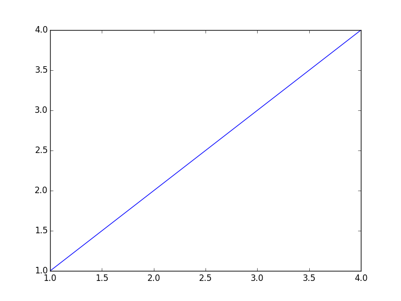

Hello Org!
Here I try to make an example post using org-mode. I am using the orgmode plugin for Nikola found here.
First let's embed a code block. The org extension to Nikola uses pygments to colorize code blocks. To do that we need to make some modifications to the css file provided by my theme zen-jinja.
pygmentize -S default -a .highlight -f html >> custom.css
cat custom.css >> ../themes/zen-jinja/assets/css/main.css
rm custom.css
Now we can have a python code block that makes a plot.
import matplotlib.pyplot as plt
plt.plot([1,2,4], [1,2,4])
plt.savefig('../images/demo-plot.png')

To get this to show up on the website I had to specify the image link as
[[file:../../images/demo-plot.png]]
This is a little weird since the path in link is different from where I actually save the image. This is because when nikola builds the post it is saved as /output/posts/hello-org/index.html and the image path is two levels up in /output/images/. It will probably require some rearrangement in conf.py to get the images to show up both inline in my org file and in the exported html.
Now let's add an equation to see if it gets rendered with MathJax.
\begin{equation} y = e^{x} \end{equation}I had to set
MATHJAX_CONFIG = '''
<script src='https://cdn.mathjax.org/mathjax/latest/MathJax.js?config=TeX-AMS-MML_HTMLorMML'></script>
'''
in the conf.py file to get this to work.
Comments
Comments powered by Disqus